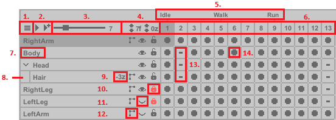

The Timeline allows you to create animations by managing Layers, Frames, and Cels. Play the animation in real-time to preview changes.
Layer
- An independent visual element in the artwork, allowing isolated modifications without affecting other parts.
- Right-click a layer to create, duplicate, merge, or delete it.
- Example: A character's leg might be on its own layer for easier editing.
Frame
- A single step in the animation timeline, displaying all active layers at that point in the sequence. Frames control how artwork changes over time.
- Right-click a frame to create, duplicate, or delete it, or set an Animation Tag - which marks the start of a specific animation. Animation Tags are not required; they merely organize the timeline into useful segments.
Cel
- The pixel data of a specific layer within a frame.
- Linked Cels: multiple cels in a row can be linked to share the same data and edits.
- Right-click a cel to clear, duplicate, or copy it.
- Right-click + drag to select a single cel or a group of cels:
- Left-click on a frame and drag left or right to reposition the cels.
- Clear or duplicate a group of cels. Deleting cels will also delete their Frames.
- Link or unlink cels.
Note: Creating or deleting layers/frames does not work with undo.
UI Overview

- Dropdown Menu – Choose to display all animations or a specific one.
- Play Buttons – The first button plays the selected animation; the second plays all animations.
- Global FPS Slider – Controls the playback speed (frames per second) for all animations.
- Layer-Specific FPS And Depth – Each layer can have an independent FPS (labeled "f"). The "z" value adjusts the layer’s depth, allowing precise rendering order control.
- Animation Tags – Right-click a frame to add/remove an animation tag. Tags define animation sequences and are used for naming exports.
- Frame Row – Only one frame is visible at a time, displaying all layers for that specific point in the sequence.
- Layer – Double-click to rename. Drag to reposition layer order. Layers are rendered top to bottom, meaning the LeftArm layer is on top in the final rendering.
- Child Layer – A layer nested under another.
- Depth Order – Displays the current depth value, which can vary per frame.
- Lock Layer – Prevents any modifications.
- Visibility Toggle – Hides the layer and prevents modifications (except global move adjustments).
- IK Layer – Indicates an Inverse Kinematics (IK) layer. Click to toggle the IK Editor.
- Empty Cel – No pixel data.
- Active Cel – Contains pixel data.